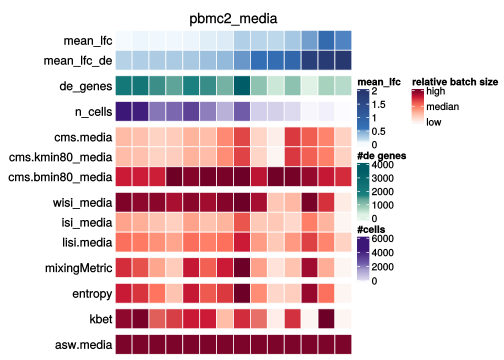
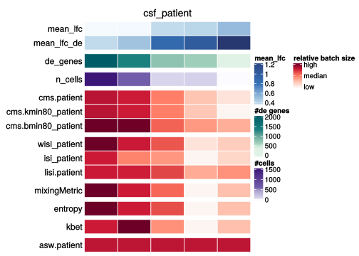
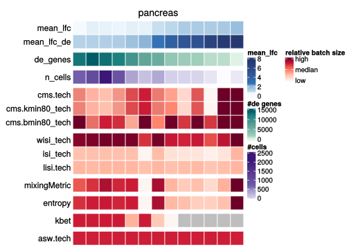
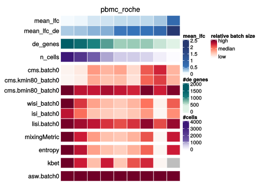
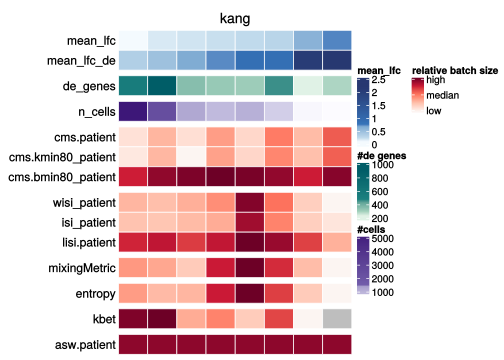
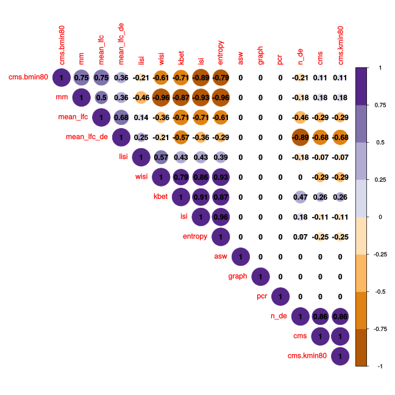
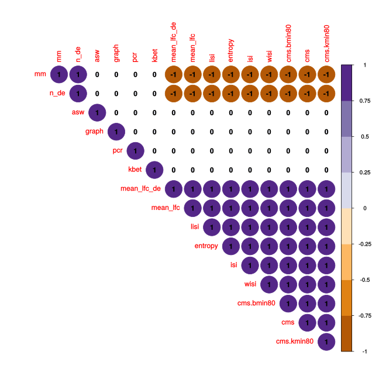
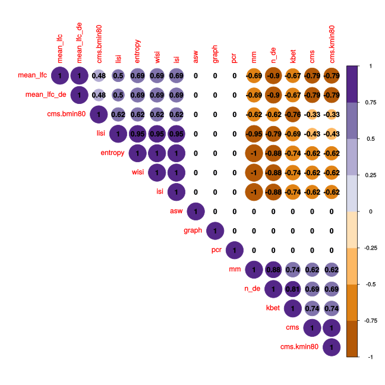
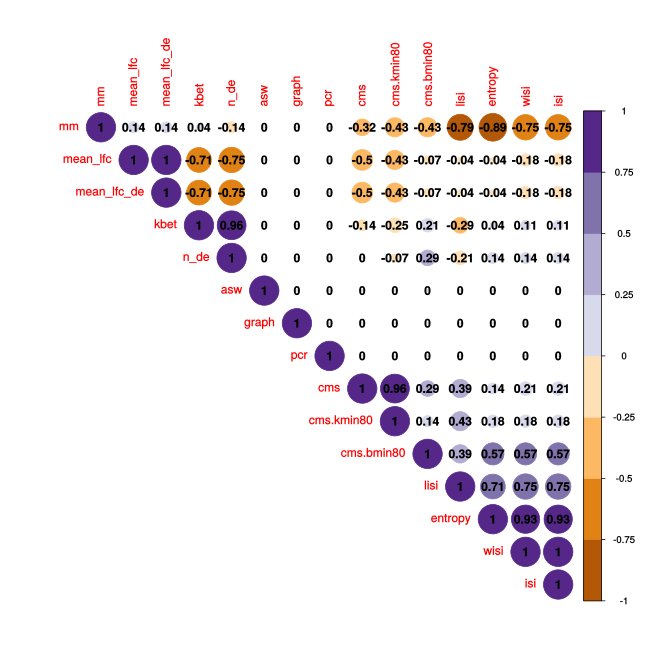
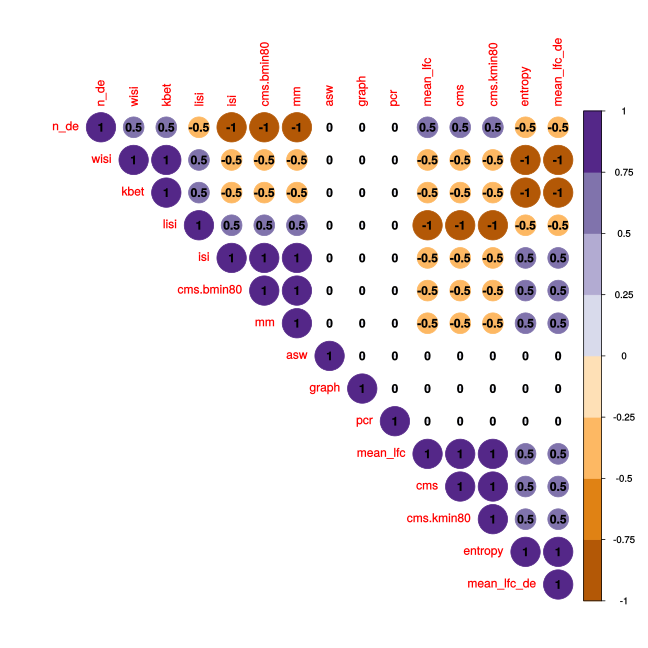

Correlation metrics with batch characteristics
Almut Lütge
19 November, 2020
suppressPackageStartupMessages({
library(CellMixS)
library(purrr)
library(tidyr)
library(plyr)
library(gridExtra)
library(scran)
library(cowplot)
library(jcolors)
library(ggpubr)
library(circlize)
library(viridis)
library(ComplexHeatmap)
library(scran)
library(magrittr)
library(colorspace)
library(corrplot)
library(RColorBrewer)
library(dplyr)
library(hrbrthemes)
})
options(bitmapType='cairo')Dataset and metrics
sce_name <- unlist(c(strsplit(params$sce_name, ",")))
metrics <- unlist(c(strsplit(params$metrics, ",")))
sce_vec <- c(paste0(params$sce, sce_name, "_", params$last, "_sce.rds"))
names(sce_vec) <- sce_name
meta_vec <- c(paste0(params$meta, sce_name, "_meta.rds"))
names(meta_vec) <- sce_name
sum_vec <- c(paste0(params$summary, sce_name, ".rds"))
names(sum_vec) <- sce_name
de_vec <- c(paste0(params$de, sce_name, ".rds"))
names(de_vec) <- sce_name
out_path_cor <- params$out_cor
out_path_fig <- params$fig_res
cols_data <-c(c(jcolors('pal6'),jcolors('pal8'))[c(1,8,14,5,2:4,6,7,9:13,15:20)],jcolors('pal4'))
names(cols_data) <- c()
cols <-c(c(jcolors('pal6'),jcolors('pal8'), jcolors('pal7'))[c(1,12,18,25,27,2,4,7,3,6,8,14,9,20)],jcolors('pal4'))
names(cols) <- c()Metric scores and batch characteristics
metric_summary <- lapply(sce_name, function(sce_nam, met = metrics){
sce <- readRDS(sce_vec[sce_nam])
meta <- readRDS(meta_vec[sce_nam])
metric_vec <- gsub("_", ".", met)
metric_vec <- gsub("default", "", metric_vec)
metric_nam <- unique (grep(paste(metric_vec, collapse="|"),
names(colData(sce)), value=TRUE))
metric_nam <- metric_nam[-grep("smooth", metric_nam)]
metric_nam <- metric_nam[-grep("casw", metric_nam)]
#exclude random batches
if (length(meta[["batch"]]) > 1) {
batch_str <- paste0("batch", seq(10, 100, 10), collapse="|")
metric_nam <- metric_nam[-grep(batch_str, metric_nam)]
}
# mean score
d <- colMeans(as.matrix(colData(sce)[, metric_nam]), na.rm = TRUE)
names(d) <- gsub(paste0('.', meta[["batch"]][1]), '', metric_nam)
# score variance
metric_var <- as_tibble(colData(sce)) %>%
group_by_at(meta[["celltype"]]) %>%
summarize_at(metric_nam, mean, na.rm = TRUE) %>%
select(-one_of(meta[["celltype"]])) %>%
as.matrix() %>% colVars(.,na.rm = TRUE) %>%
set_names(paste0("ct_var_", names(d)))
d <- c(d, metric_var)
d$n_cells <- ncol(sce)
d$n_batches <- length(levels(as.factor(colData(sce)[,meta$batch[1]])))
d$n_ct <- length(levels(as.factor(colData(sce)[,meta$celltype])))
d
}) %>% set_names(sce_name)
metric_summary <- bind_rows(!!!metric_summary) %>% set_rownames(sce_name)
#### ---------- Order by metric type ----------------------------------#######
#(manual needs to be adjusted if new metrics are added)
metric_fullnam <- colnames(metric_summary)[-grep( "ct_", colnames(metric_summary))]
metric_fullnam <- metric_fullnam[! metric_fullnam %in% c("n_cells", "n_batches", "n_ct")]
cms_ind <- grep("cms", metric_fullnam)
lisi_ind <- grep("isi", metric_fullnam)
ent_ind <- grep("entropy", metric_fullnam)
mm_ind <- grep("mm", metric_fullnam)
asw_ind <- grep("^asw", metric_fullnam)
kbet_ind <- grep("kbet", metric_fullnam)
graph_ind <- grep("graph", metric_fullnam)
pcr_ind <- grep("pcr", metric_fullnam)
metric_order <- metric_fullnam[c(cms_ind[c(2,3,1)], lisi_ind[c(1,3,2)], ent_ind, mm_ind,
kbet_ind, asw_ind, graph_ind, pcr_ind)]
names(cols) <- metric_fullnam
cols <- cols[metric_fullnam]
####--------------------------------------------------------------------########Per celltype metric scores and batch characteristics
ct_summary <- lapply(sce_name, function(sce_nam, met = metrics){
gc()
sce <- readRDS(sce_vec[sce_nam])
meta <- readRDS(meta_vec[sce_nam])
de <- readRDS(de_vec[sce_nam])
metric_vec <- gsub("_", ".", met)
metric_vec <- gsub("default", "", metric_vec)
metric_nam <- unique (grep(paste(metric_vec, collapse="|"),
names(colData(sce)), value=TRUE))
metric_nam <- metric_nam[-grep("smooth", metric_nam)]
metric_nam <- metric_nam[-grep("casw", metric_nam)]
#exclude random batches
if (length(meta[["batch"]]) > 1) {
batch_str <- paste0("batch", seq(10, 100, 10), collapse="|")
metric_nam <- metric_nam[-grep(batch_str, metric_nam)]
}
nam_met <- gsub(paste0('.', meta[["batch"]][1]), '', metric_nam)
ct_mean <- as_tibble(colData(sce)) %>%
group_by_at(meta[["celltype"]]) %>%
summarize_at(metric_nam, mean, na.rm = TRUE)
n_de <- lapply(de[["table"]], function(y) vapply(y, function(x) sum(x$PValue < 0.05), numeric(1)))
n_de_sum <- bind_rows(!!!n_de) %>% colMeans()
mean_lfc <- lapply(de[["table"]], function(y) vapply(y, function(x) mean(abs(x$logFC)), numeric(1)))
mean_lfc_sum <- bind_rows(!!!mean_lfc) %>% colMeans()
mean_lfc_de <- lapply(de[["table"]], function(y) vapply(y, function(x){
de <- which(x$PValue < 0.05)
mean(abs(x[de, "logFC"]))
}, numeric(1)))
mean_lfc_de_sum <- bind_rows(!!!mean_lfc_de) %>% colMeans()
ct_mean$n_de <- n_de_sum
ct_mean$mean_lfc <- mean_lfc_sum
ct_mean$mean_lfc_de <- mean_lfc_de_sum
# add number of cells per celltype
n_ct <- table(colData(sce)[, meta[["celltype"]]])
ct_mean$n_cells <- n_ct[ct_mean[,meta[["celltype"]]][[1]]]
ct_mean
}) %>% set_names(sce_name)Summarized batch characteristics
batch_size <- lapply(sce_name, function(sce_nam){
sum <- readRDS(sum_vec[sce_nam])
d <- data.frame("mean_var_batch" = sum$mean_var_batch,
"mean_var_celltype" = sum$mean_var_celltype,
"mean_de_genes" = sum$mean_mean_n_de_genes,
"n_genes" = sum$n_genes_total)
}) %>% set_names(sce_name) %>% bind_rows() %>% set_rownames(sce_name)
size_metric <- cbind(batch_size, metric_summary)
size_metric$batch_origin <- rep(NA, nrow(size_metric))
size_metric[c("pbmc2_media", "pbmc_roche", "csf_media"), "batch_origin"] <- "media"
size_metric[c("csf_patient", "kang", "pbmc2_pat"), "batch_origin"] <- "patient"
size_metric[c("pancreas", "cellbench", "hca"), "batch_origin"] <- "protocol"
size_metric$dataset <- rownames(size_metric)
size_metric <- size_metric %>% arrange(desc(mean_var_batch))
rownames(size_metric) <- size_metric$dataset
#batch type
size_metric <- size_metric %>% mutate("batch_type" = revalue(dataset, c("cellbench" = "linear",
"csf_media" = "additive",
"csf_patient" = "additive",
"hca" = "other",
"kang" = "other",
"pancreas" = "interacting",
"pbmc_roche" = "interacting",
"pbmc2_media" = "interacting",
"pbmc2_pat" = "other")))Batch size parameter
How does the metric scores changes along size characteristics
#colors
q_size <- sequential_hcl(5, palette = "Blues")
col_size <- colorRamp2(c(0.2, 0.1, 0.03, 0.01, 0), q_size)
q_type <- qualitative_hcl(4, palette = "Dark 3")
col_type <- c("protocol" = q_type[1], "media" = q_type[3], "patient" = q_type[4])
col_batch_type <- c("linear" = cols_data[1], "additive" = cols_data[2],
"interacting" = cols_data[3], "other" = cols_data[4])
q_size2 <- sequential_hcl(5, palette = "Mint")
col_size2 <- colorRamp2(c(0.65, 0.5, 0.3, 0.2, 0.1), q_size2)
pal_metr <- "Reds"
q_metr <- sequential_hcl(5, palette = pal_metr)
col_vec <- function(mean_tab){
min_col <- min(mean_tab, na.rm = TRUE)
max_col <- max(mean_tab, na.rm = TRUE)
mean_col <- mean(mean_tab, na.rm = TRUE)
q <- quantile(mean_tab, probs = c(0.25, 0.75), na.rm = TRUE)
col_v <- c(min_col, q[1], mean_col, q[2], max_col)
}
#annotation
ha_type = HeatmapAnnotation("batch_origin" = size_metric$batch_origin,
"batch_type" = size_metric$batch_type,
simple_anno_size = unit(1, "cm"),
col = list("batch_origin" = col_type,
"batch_type" = col_batch_type),
annotation_height = unit(1, "cm"),
annotation_name_side = "left")
ha_type_only = HeatmapAnnotation("batch_type" = size_metric$batch_type,
simple_anno_size = unit(0.8, "cm"),
col = list("batch_type" = col_batch_type),
annotation_height = unit(0.8, "cm"),
annotation_name_side = "left")
### Heatmaps
## Size Parameter
# mean variance part
n_batches <- t(as.matrix(size_metric[,c("mean_var_batch", "mean_var_celltype")])) %>%
set_colnames(size_metric$dataset)
rownames(n_batches) <- c("var_batch", "var_celltype")
h_size1 <- Heatmap(n_batches,
cluster_rows = FALSE,
cluster_columns = FALSE,
name = "variance",
column_names_side = "bottom",
column_names_rot = 0,
column_names_centered = TRUE,
column_names_gp = gpar(fontsize = 8),
row_names_side = "left",
col = col_size,
top_annotation = ha_type_only,
rect_gp = gpar(col= "white"))
mean_de_genes <- t(as.matrix(size_metric$mean_de_genes))
colnames(mean_de_genes) <- size_metric$dataset
rownames(mean_de_genes) <- "de_genes"
h_size2 <- Heatmap(mean_de_genes,
cluster_rows = FALSE,
cluster_columns = FALSE,
name = "de genes [%]",
column_names_side = "bottom",
column_names_rot = 0,
column_names_centered = TRUE,
column_names_gp = gpar(fontsize = 8),
row_names_side = "left",
col = col_size2,
rect_gp = gpar(col= "white"))
# Metrics
#scaled matrix
mtr_adjust <- gsub("_", ".", metrics)
mtr_adjust <- gsub(".default", "", mtr_adjust)
metr_str <- paste(mtr_adjust, collapse="|")
metr_columns <- colnames(size_metric)[grep(metr_str, colnames(size_metric))]
metr_columns <- metr_columns[-grep("ct_var", metr_columns)]
scal_mat <- t(apply(size_metric[,metr_columns], 2, function(x){
scaled <- (x - min(x, na.rm = TRUE))/(max(x, na.rm = TRUE) - min(x, na.rm = TRUE))
}))
col_scal = colorRamp2(col_vec(scal_mat), q_metr)
h_scal <- Heatmap(scal_mat,
cluster_rows = FALSE,
cluster_columns = FALSE,
name = "metrics",
column_names_side = "bottom",
column_names_rot = 45,
column_names_centered = TRUE,
column_names_gp = gpar(fontsize = 8),
row_names_side = "left",
col = col_scal,
show_heatmap_legend = TRUE,
rect_gp = gpar(col= "white"))
# cms
cms_columns <- colnames(size_metric)[grep('cms', colnames(size_metric))]
cms_columns <- cms_columns[-grep("ct_var", cms_columns)]
mean_cms <- t(as.matrix(size_metric[, cms_columns]))
colnames(mean_cms) <- size_metric$datasete
col_cms = colorRamp2(col_vec(mean_cms), q_metr)
h_cms <- Heatmap(mean_cms,
cluster_rows = FALSE,
cluster_columns = FALSE,
name = "cms",
column_names_side = "bottom",
column_names_rot = 45,
column_names_centered = TRUE,
column_names_gp = gpar(fontsize = 8),
row_names_side = "left",
col = col_cms,
show_heatmap_legend = FALSE,
rect_gp = gpar(col= "white"))
# isi's
isi_columns <- colnames(size_metric)[grep('isi', colnames(size_metric))]
isi_columns <- isi_columns[-grep("ct_var", isi_columns)]
mean_isi <- t(as.matrix(size_metric[, isi_columns]))
colnames(mean_isi) <- size_metric$dataset
col_isi = colorRamp2(col_vec(mean_isi), q_metr)
h_isi <- Heatmap(mean_isi,
cluster_rows = FALSE,
cluster_columns = FALSE,
name = "isi's",
column_names_side = "bottom",
column_names_rot = 45,
column_names_centered = TRUE,
column_names_gp = gpar(fontsize = 8),
row_names_side = "left",
col = col_isi,
show_heatmap_legend = FALSE,
rect_gp = gpar(col= "white"))
# entropy
mean_entropy <- t(as.matrix(size_metric$entropy))
colnames(mean_entropy) <- size_metric$dataset
rownames(mean_entropy) <- "entropy"
col_ent = colorRamp2(col_vec(mean_entropy), q_metr)
h_ent <- Heatmap(mean_entropy,
cluster_rows = FALSE,
cluster_columns = FALSE,
name = "entropy",
column_names_side = "bottom",
column_names_rot = 45,
column_names_centered = TRUE,
column_names_gp = gpar(fontsize = 8),
row_names_side = "left",
col = col_ent,
show_heatmap_legend = FALSE,
rect_gp = gpar(col= "white"))
# mixingMetric
mean_mm <- t(as.matrix(size_metric$mm))
colnames(mean_mm) <- size_metric$dataset
rownames(mean_mm) <- "mixingMetric"
col_mm = colorRamp2(col_vec(mean_mm), rev(q_metr))
h_mm <- Heatmap(mean_mm,
cluster_rows = FALSE,
cluster_columns = FALSE,
name = "mixingMetric",
column_names_side = "bottom",
column_names_rot = 45,
column_names_centered = TRUE,
column_names_gp = gpar(fontsize = 8),
row_names_side = "left",
col = col_mm,
show_heatmap_legend = FALSE,
rect_gp = gpar(col= "white"))
# kBet
mean_kbet <- t(as.matrix(size_metric$kbet))
colnames(mean_kbet) <- size_metric$dataset
rownames(mean_kbet) <- "kbet"
col_kbet = colorRamp2(col_vec(mean_kbet), rev(q_metr))
h_kbet <- Heatmap(mean_kbet,
cluster_rows = FALSE,
cluster_columns = FALSE,
name = "kbet",
column_names_side = "bottom",
column_names_rot = 45,
column_names_centered = TRUE,
column_names_gp = gpar(fontsize = 8),
row_names_side = "left",
col = col_kbet,
show_heatmap_legend = FALSE,
rect_gp = gpar(col= "white"))
# pcr
mean_pcr <- t(as.matrix(size_metric$pcr))
colnames(mean_pcr) <- size_metric$dataset
rownames(mean_pcr) <- "pcr"
col_pcr = colorRamp2(col_vec(mean_pcr), rev(q_metr))
h_pcr <- Heatmap(mean_pcr,
cluster_rows = FALSE,
cluster_columns = FALSE,
name = "pcr",
column_names_side = "bottom",
column_names_rot = 45,
column_names_centered = TRUE,
column_names_gp = gpar(fontsize = 8),
row_names_side = "left",
col = col_pcr,
show_heatmap_legend = FALSE,
rect_gp = gpar(col= "white"))
# asw
mean_asw <- t(as.matrix(size_metric$asw))
colnames(mean_asw) <- size_metric$dataset
rownames(mean_asw) <- "asw"
col_asw = colorRamp2(col_vec(mean_asw), rev(q_metr))
h_asw <- Heatmap(mean_asw,
cluster_rows = FALSE,
cluster_columns = FALSE,
name = "asw",
column_names_side = "bottom",
column_names_rot = 45,
column_names_centered = TRUE,
column_names_gp = gpar(fontsize = 8),
row_names_side = "left",
col = col_asw,
show_heatmap_legend = FALSE,
rect_gp = gpar(col= "white"))
# graph_connectivity
mean_gcon <- t(as.matrix(size_metric$graph_connectivity))
colnames(mean_gcon) <- size_metric$dataset
rownames(mean_gcon) <- "graph_connectivity"
col_gcon = colorRamp2(col_vec(mean_gcon), q_metr)
h_gcon <- Heatmap(mean_gcon,
cluster_rows = FALSE,
cluster_columns = FALSE,
name = "graph_connectivity",
column_names_side = "bottom",
column_names_rot = 45,
column_names_centered = TRUE,
column_names_gp = gpar(fontsize = 8),
row_names_side = "left",
col = col_gcon,
show_heatmap_legend = FALSE,
rect_gp = gpar(col= "white"))
#LEGENDcols
col_fun = colorRamp2(c(0, 0.25, 0.5, 0.75, 1), rev(q_metr))
lgd = Legend(col_fun = col_fun, title = "relative batch size", at = c(0, 0.5, 1),
labels = c("low", "median", "high"))
h_list <- h_size1 %v% h_size2 %v% h_cms %v% h_isi %v% h_mm %v% h_ent %v% h_kbet %v% h_asw %v% h_gcon %v% h_pcr
h_list2 <- h_size1 %v% h_size2 %v% h_scal
draw(h_list, annotation_legend_list = list(lgd))
draw(h_list2)
saveRDS(h_list, paste0(out_path_fig, "_summary_all.rds"))
saveRDS(lgd, paste0(out_path_fig, "_summary_lgd.rds"))Correlation with batch size parameters
size_columns <- colnames(batch_size)[!colnames(batch_size) %in% "mean_var_celltype"]
size_mat <- size_metric[, c(metr_columns, size_columns)]
size_cor <- cor(size_mat, use = "complete.obs", method = "spearman")
###------------------ metric order -----------------------------------#########
cms_ind <- grep("cms", colnames(size_cor))
lisi_ind <- grep("isi", colnames(size_cor))
ent_ind <- grep("entropy", colnames(size_cor))
mm_ind <- grep("mm", colnames(size_cor))
asw_ind <- grep("^asw", colnames(size_cor))
kbet_ind <- grep("kbet",colnames(size_cor))
graph_ind <- grep("graph", colnames(size_cor))
pcr_ind <- grep("pcr", colnames(size_cor))
size_ind <- grep("mean_", colnames(size_cor))
metric_order <- colnames(size_cor)[c(size_ind, cms_ind[c(2,3,1)], lisi_ind[c(1,3,2)], ent_ind, mm_ind,
kbet_ind, asw_ind, graph_ind, pcr_ind)]
###------------------ metric reorder -----------------------------------#######
size_cor <- size_cor[metric_order, metric_order]
corrplot(size_cor,
type="upper",
order="original",
hclust.method = "complete",
col=brewer.pal(n=8, name="PuOr"),
addgrid.col = NA,
addCoef.col = "black",
diag = FALSE)
#save correlation
saveRDS(size_cor, out_path_cor)Score by features
size_met <- size_metric %>% select(!starts_with("ct_"))
size_met <- size_met %>% mutate("colour" = cols_data[as.numeric(as.factor(batch_type))])
# get scaled scores
dir_ind <- which(!rownames(scal_mat) %in% c("mm", "kbet", "pcr"))
scal_mat_dir <- scal_mat
scal_mat_dir[dir_ind,] <- 1 - scal_mat[dir_ind,]
size_met_scal <- size_met
size_met_scal[, rownames(scal_mat_dir)] <- t(scal_mat_dir)
feature_vars <- colnames(size_met_scal)[!colnames(size_met_scal) %in% metric_fullnam]
size_long <- size_met_scal %>% pivot_longer(-all_of(feature_vars), names_to = "metric",
values_to = "scaled_score")
size_long$metric <- as.factor(size_long$metric)
sep_plots <- function(feature){
size_long <- size_long %>% mutate(metric2 = metric)
cols_rep <- rep(cols[1: length(levels(size_long$metric))],
each = length(levels(as.factor(size_long$dataset))))
cols_data_rep <- size_long$colour
size_long$metric <- factor(size_long$metric, levels = metric_order)
p <- ggplot(size_long, aes_string(x = feature, y = quote(scaled_score))) +
geom_line(data=size_long %>% dplyr::select(-metric), aes(group=metric2),
color="grey", size=0.5, alpha=0.5) +
geom_line( aes(color=metric), color=cols_rep, size=1.2 ) +
# geom_point( aes(color=batch_type), size=1.4 , color = cols_data_rep) +
theme_ipsum(base_family = 'Helvetica') +
theme(
legend.position="none",
plot.title = element_text(size=14),
panel.grid = element_blank()
) +
ggtitle(feature) +
facet_wrap(~metric)
p
}
feature_plot <- feature_vars[!feature_vars %in% c("batch_origin", "batch_type", "dataset", "colour")]
template_sep <- c(
"#### {{nm}}\n",
"```{r scaling sep {{nm}}, echo = FALSE, fig.width = 8, fig.height = 7}\n",
"p <- sep_plots('{{nm}}')\n",
"p",
"saveRDS(p, paste0(out_path_fig, '_{{nm}}.rds'))",
"```\n",
"\n"
)
plots_sep <- lapply(feature_plot,
function(nm) knitr::knit_expand(text = template_sep)
)mean_var_batch

mean_var_celltype

mean_de_genes

n_genes

n_cells

n_batches

n_ct

Relation DE and PVEB with score
size_long$metric <- factor(size_long$metric, levels = metric_order)
size_cor_sum <- size_cor[metric_order,c("mean_var_batch", "mean_de_genes")]
size_cor_sum <- size_cor_sum[!rownames(size_cor_sum) %in% c("mean_var_batch", "mean_de_genes"),]
size_long$metric <- recode(size_long$metric, cms.kmin80 = "cms_kmin", cms.bmin80 = "cms_bmin",
cms = "cms_default", graph_connectivity = "graph", kbet = "kBet")
size_long <- size_long %>% mutate(metric2 = metric)
#transform DE genes to plot both in the same coord system
y1 <- min(size_long$mean_var_batch, na.rm = TRUE)
y2 <- max(size_long$mean_var_batch, na.rm = TRUE)
x1 <- min(size_long$mean_de_genes, na.rm = TRUE)
x2 <- max(size_long$mean_de_genes, na.rm = TRUE)
b <- (y2 - y1) / (x2 - x1)
a <- y1 - b * x1
size_long <- size_long %>% mutate(de_trans = a + b * mean_de_genes)
keep <- c("mean_var_celltype", "mean_de_genes","n_genes","n_cells","n_batches","n_ct","batch_origin","dataset","batch_type", "colour","metric","scaled_score","metric2")
size_long_long <- size_long %>% pivot_longer(-all_of(keep), names_to = "characteristics",
values_to = "variance")
cols_rep <- rep(cols[1:(length(levels(size_long_long$metric))-2)],
each = (2*length(levels(as.factor(size_long_long$dataset)))))
cols_data_rep <- size_long_long$colour
label <- data.frame(
scaled_score = c(rep(0.25, 10), rep(0.75, 2)),
variance = c(rep(0.08, 10), rep(0.06, 2)),
metric = levels(size_long$metric)[-c(1:2)],
label = c(paste0("R_PVE-Batch = ", signif(abs(size_cor_sum[,"mean_var_batch"]), digits = 2),
"\nR_DE = ", signif(abs(size_cor_sum[,"mean_de_genes"]), digits = 2)))
)
# Plot
p <- ggplot(size_long_long, aes(x = variance, y = scaled_score)) +
# geom_line(data=size_long_long %>% dplyr::select(-metric),
# aes(group=metric2), color="grey",
# size=0.5, alpha=0.5) +
geom_line( aes(color=metric, linetype=characteristics),
color=cols_rep, size=1.2) +
scale_x_continuous(sec.axis = sec_axis(as.formula(paste0("~ (. - ", a, "/", b, ")")),
name = 'DE genes')) +
theme_ipsum(base_family = 'Helvetica') +
theme(
plot.title = element_text(size=14),
panel.grid = element_blank()
) +
ggtitle("Metric performance across datasets") +
geom_label(data = label, aes(label = label), size = 6) +
facet_wrap(~metric)
p
saveRDS(p, paste0(out_path_fig, '_task1.rds'))Fit a multiple linear regression with batch characteristics and scores
size_num <- size_met %>% select_if(is.numeric)
size_vars <- colnames(size_num)[!colnames(size_num) %in% metric_fullnam]
library(jtools)
mlr_fun <- function(met){
size_tab <- size_num %>% dplyr::select(all_of(c(size_vars, met)))
f <- as.formula(paste(met,
paste(size_vars, collapse = " + "),
sep = " ~ "))
fit <- lm(f, data = size_tab)
summ(fit, scale = TRUE)
}
template_sep <- c(
"#### {{nm}}\n",
"```{r mlr fit {{nm}}, echo = FALSE, fig.width = 8, fig.height = 7}\n",
"mlr_fun('{{nm}}')\n",
"```\n",
"\n"
)
plots_sep <- lapply(metric_fullnam,
function(nm) knitr::knit_expand(text = template_sep)
)cms
## MODEL INFO:
## Observations: 9
## Dependent Variable: cms
## Type: OLS linear regression
##
## MODEL FIT:
## F(7,1) = 26.65, p = 0.15
## R² = 0.99
## Adj. R² = 0.96
##
## Standard errors: OLS
## ------------------------------------------------------
## Est. S.E. t val. p
## ----------------------- ------- ------ -------- ------
## (Intercept) 0.10 0.01 11.62 0.05
## mean_var_batch 0.29 0.07 3.99 0.16
## mean_var_celltype -0.18 0.08 -2.19 0.27
## mean_de_genes -0.05 0.09 -0.62 0.65
## n_genes -0.33 0.09 -3.65 0.17
## n_cells -0.30 0.11 -2.58 0.24
## n_batches 0.14 0.07 2.01 0.29
## n_ct 0.46 0.16 2.83 0.22
## ------------------------------------------------------
##
## Continuous predictors are mean-centered and scaled by 1 s.d.cms.kmin80
## MODEL INFO:
## Observations: 9
## Dependent Variable: cms.kmin80
## Type: OLS linear regression
##
## MODEL FIT:
## F(7,1) = 25.46, p = 0.15
## R² = 0.99
## Adj. R² = 0.96
##
## Standard errors: OLS
## ------------------------------------------------------
## Est. S.E. t val. p
## ----------------------- ------- ------ -------- ------
## (Intercept) 0.11 0.01 11.34 0.06
## mean_var_batch 0.28 0.08 3.71 0.17
## mean_var_celltype -0.17 0.09 -1.93 0.30
## mean_de_genes -0.05 0.09 -0.58 0.66
## n_genes -0.33 0.09 -3.48 0.18
## n_cells -0.29 0.12 -2.39 0.25
## n_batches 0.15 0.07 2.06 0.29
## n_ct 0.44 0.17 2.65 0.23
## ------------------------------------------------------
##
## Continuous predictors are mean-centered and scaled by 1 s.d.cms.bmin80
## MODEL INFO:
## Observations: 9
## Dependent Variable: cms.bmin80
## Type: OLS linear regression
##
## MODEL FIT:
## F(7,1) = 0.41, p = 0.84
## R² = 0.74
## Adj. R² = -1.06
##
## Standard errors: OLS
## ------------------------------------------------------
## Est. S.E. t val. p
## ----------------------- ------- ------ -------- ------
## (Intercept) 0.02 0.02 1.16 0.45
## mean_var_batch 0.01 0.13 0.07 0.95
## mean_var_celltype -0.03 0.14 -0.20 0.88
## mean_de_genes 0.06 0.15 0.38 0.77
## n_genes -0.06 0.16 -0.39 0.76
## n_cells -0.05 0.20 -0.23 0.85
## n_batches 0.01 0.12 0.04 0.97
## n_ct 0.11 0.28 0.38 0.77
## ------------------------------------------------------
##
## Continuous predictors are mean-centered and scaled by 1 s.d.mm
## MODEL INFO:
## Observations: 9
## Dependent Variable: mm
## Type: OLS linear regression
##
## MODEL FIT:
## F(7,1) = 6.05, p = 0.30
## R² = 0.98
## Adj. R² = 0.82
##
## Standard errors: OLS
## ---------------------------------------------------------
## Est. S.E. t val. p
## ----------------------- -------- -------- -------- ------
## (Intercept) 153.60 12.71 12.08 0.05
## mean_var_batch 33.46 104.60 0.32 0.80
## mean_var_celltype -58.83 118.37 -0.50 0.71
## mean_de_genes -42.76 123.68 -0.35 0.79
## n_genes 119.77 129.10 0.93 0.52
## n_cells 1.89 162.82 0.01 0.99
## n_batches -65.76 96.64 -0.68 0.62
## n_ct -52.96 229.21 -0.23 0.86
## ---------------------------------------------------------
##
## Continuous predictors are mean-centered and scaled by 1 s.d.wisi
## MODEL INFO:
## Observations: 9
## Dependent Variable: wisi
## Type: OLS linear regression
##
## MODEL FIT:
## F(7,1) = 3.38, p = 0.40
## R² = 0.96
## Adj. R² = 0.68
##
## Standard errors: OLS
## ------------------------------------------------------
## Est. S.E. t val. p
## ----------------------- ------- ------ -------- ------
## (Intercept) 1.12 0.26 4.26 0.15
## mean_var_batch 2.38 2.15 1.11 0.47
## mean_var_celltype -1.27 2.44 -0.52 0.70
## mean_de_genes 0.42 2.55 0.16 0.90
## n_genes -4.13 2.66 -1.55 0.36
## n_cells -3.91 3.35 -1.17 0.45
## n_batches 2.43 1.99 1.22 0.44
## n_ct 5.49 4.72 1.16 0.45
## ------------------------------------------------------
##
## Continuous predictors are mean-centered and scaled by 1 s.d.isi
## MODEL INFO:
## Observations: 9
## Dependent Variable: isi
## Type: OLS linear regression
##
## MODEL FIT:
## F(7,1) = 10.30, p = 0.24
## R² = 0.99
## Adj. R² = 0.89
##
## Standard errors: OLS
## ------------------------------------------------------
## Est. S.E. t val. p
## ----------------------- ------- ------ -------- ------
## (Intercept) 1.72 0.12 13.77 0.05
## mean_var_batch 2.33 1.03 2.27 0.26
## mean_var_celltype -1.27 1.16 -1.09 0.47
## mean_de_genes -0.03 1.21 -0.03 0.98
## n_genes -3.20 1.27 -2.52 0.24
## n_cells -3.19 1.60 -2.00 0.30
## n_batches 1.93 0.95 2.03 0.29
## n_ct 4.36 2.25 1.94 0.30
## ------------------------------------------------------
##
## Continuous predictors are mean-centered and scaled by 1 s.d.entropy
## MODEL INFO:
## Observations: 9
## Dependent Variable: entropy
## Type: OLS linear regression
##
## MODEL FIT:
## F(7,1) = 3.90, p = 0.37
## R² = 0.96
## Adj. R² = 0.72
##
## Standard errors: OLS
## ------------------------------------------------------
## Est. S.E. t val. p
## ----------------------- ------- ------ -------- ------
## (Intercept) 0.32 0.05 6.62 0.10
## mean_var_batch -0.09 0.40 -0.23 0.86
## mean_var_celltype 0.48 0.45 1.07 0.48
## mean_de_genes 0.18 0.47 0.39 0.77
## n_genes -0.50 0.49 -1.01 0.50
## n_cells 0.01 0.62 0.01 0.99
## n_batches 0.65 0.37 1.75 0.33
## n_ct 0.25 0.87 0.29 0.82
## ------------------------------------------------------
##
## Continuous predictors are mean-centered and scaled by 1 s.d.lisi
## MODEL INFO:
## Observations: 9
## Dependent Variable: lisi
## Type: OLS linear regression
##
## MODEL FIT:
## F(7,1) = 9.37, p = 0.25
## R² = 0.98
## Adj. R² = 0.88
##
## Standard errors: OLS
## ------------------------------------------------------
## Est. S.E. t val. p
## ----------------------- ------- ------ -------- ------
## (Intercept) 1.44 0.10 15.02 0.04
## mean_var_batch 2.22 0.79 2.82 0.22
## mean_var_celltype -1.61 0.89 -1.81 0.32
## mean_de_genes -0.23 0.93 -0.25 0.85
## n_genes -2.49 0.97 -2.56 0.24
## n_cells -2.84 1.23 -2.32 0.26
## n_batches 1.08 0.73 1.49 0.38
## n_ct 3.75 1.72 2.17 0.27
## ------------------------------------------------------
##
## Continuous predictors are mean-centered and scaled by 1 s.d.kbet
## MODEL INFO:
## Observations: 9
## Dependent Variable: kbet
## Type: OLS linear regression
##
## MODEL FIT:
## F(7,1) = 0.21, p = 0.93
## R² = 0.60
## Adj. R² = -2.21
##
## Standard errors: OLS
## ------------------------------------------------------
## Est. S.E. t val. p
## ----------------------- ------- ------ -------- ------
## (Intercept) 0.87 0.10 8.54 0.07
## mean_var_batch -0.12 0.84 -0.14 0.91
## mean_var_celltype 0.14 0.95 0.15 0.91
## mean_de_genes 0.87 0.99 0.88 0.54
## n_genes -0.74 1.04 -0.72 0.60
## n_cells -0.70 1.31 -0.54 0.69
## n_batches 0.68 0.78 0.88 0.54
## n_ct 1.21 1.84 0.66 0.63
## ------------------------------------------------------
##
## Continuous predictors are mean-centered and scaled by 1 s.d.pcr
## MODEL INFO:
## Observations: 9
## Dependent Variable: pcr
## Type: OLS linear regression
##
## MODEL FIT:
## F(7,1) = 7.82, p = 0.27
## R² = 0.98
## Adj. R² = 0.86
##
## Standard errors: OLS
## ------------------------------------------------------
## Est. S.E. t val. p
## ----------------------- ------- ------ -------- ------
## (Intercept) 0.10 0.01 6.54 0.10
## mean_var_batch 0.23 0.12 1.92 0.31
## mean_var_celltype -0.11 0.14 -0.83 0.56
## mean_de_genes -0.06 0.14 -0.44 0.74
## n_genes -0.03 0.15 -0.24 0.85
## n_cells -0.10 0.19 -0.54 0.68
## n_batches -0.08 0.11 -0.74 0.59
## n_ct 0.11 0.26 0.42 0.75
## ------------------------------------------------------
##
## Continuous predictors are mean-centered and scaled by 1 s.d.graph_connectivity
## MODEL INFO:
## Observations: 9
## Dependent Variable: graph_connectivity
## Type: OLS linear regression
##
## MODEL FIT:
## F(7,1) = 254.55, p = 0.05
## R² = 1.00
## Adj. R² = 1.00
##
## Standard errors: OLS
## ------------------------------------------------------
## Est. S.E. t val. p
## ----------------------- ------- ------ -------- ------
## (Intercept) 0.91 0.00 257.95 0.00
## mean_var_batch -0.23 0.03 -7.85 0.08
## mean_var_celltype 0.08 0.03 2.33 0.26
## mean_de_genes 0.01 0.03 0.31 0.81
## n_genes 0.07 0.04 1.84 0.32
## n_cells 0.24 0.05 5.23 0.12
## n_batches -0.01 0.03 -0.48 0.72
## n_ct -0.28 0.06 -4.44 0.14
## ------------------------------------------------------
##
## Continuous predictors are mean-centered and scaled by 1 s.d.asw
## MODEL INFO:
## Observations: 9
## Dependent Variable: asw
## Type: OLS linear regression
##
## MODEL FIT:
## F(7,1) = 10.78, p = 0.23
## R² = 0.99
## Adj. R² = 0.90
##
## Standard errors: OLS
## ------------------------------------------------------
## Est. S.E. t val. p
## ----------------------- ------- ------ -------- ------
## (Intercept) 0.84 0.01 65.39 0.01
## mean_var_batch -0.28 0.11 -2.70 0.23
## mean_var_celltype 0.30 0.12 2.51 0.24
## mean_de_genes 0.11 0.12 0.89 0.54
## n_genes -0.00 0.13 -0.03 0.98
## n_cells 0.21 0.16 1.29 0.42
## n_batches 0.20 0.10 2.05 0.29
## n_ct -0.16 0.23 -0.67 0.62
## ------------------------------------------------------
##
## Continuous predictors are mean-centered and scaled by 1 s.d.Spearman correlation plot
size_num_cor <- size_num %>% as.matrix() %>% cor(., use = "complete.obs", method = "spearman")
feature_rows <- rownames(size_num_cor)[!colnames(size_num_cor) %in% metric_fullnam]
size_num_cor <- size_num_cor[feature_rows, metric_fullnam]
size_num_long <- size_num_cor %>% as_tibble() %>% mutate("feature" = feature_rows) %>%
pivot_longer(-feature, names_to = "metric", values_to = "Spearman_correlation")
size_num_long$cor_abs <- abs(size_num_long$Spearman_correlation)
size_num_long$metric <- recode(size_num_long$metric, cms.kmin80 = "cms_kmin", cms.bmin80 = "cms_bmin",
cms = "cms_default")
metric_order <- c("cms_default", "cms_kmin", "cms_bmin", "lisi", "wisi", "isi",
"entropy", "mm", "asw", "graph_connectivity", "kbet", "pcr")
size_num_long$metric <- factor(size_num_long$metric, levels = metric_order)
p <- ggballoonplot(size_num_long,
x = 'metric',
y = 'feature',
size = 'cor_abs',
size.range = c(1,22),
col = "black",
font.label = c(22, "plain"),
fill = 'Spearman_correlation') +
labs(title="Metric correlation with batch characteristics") +
theme_ipsum(base_family = 'Helvetica') +
guides(size = FALSE) +
scale_fill_continuous_diverging() +
theme(axis.text.x = element_text(size=10, angle=45, hjust = 1))
p
saveRDS(p, paste0(out_path_fig, "_spear_cor.rds"))Relation of DE genes and RVEB with confounding effects (number of cells/genes)
theme_def <- theme_ipsum(base_family = 'Helvetica',
strip_text_face = "bold",
axis_title_size = 25,
strip_text_size = 22,
base_size = 25) +
theme(
legend.position="top",
plot.title = element_text(size=26),
axis.text.x = element_text(size=16),
axis.text.y = element_text(size=16),
panel.grid.major = element_blank(),
panel.spacing = unit(1, "lines"))
conf_plot <- function(con_var){
p1 <- ggplot(size_num, aes_string(x = con_var, y = "mean_var_batch")) +
geom_point(size = 3, color = "#00AFBB") +
geom_smooth(method=lm, colour="#00AFBB") +
theme_def +
ggtitle(paste0("PVEB"))
p2 <- ggplot(size_num, aes_string(x = con_var, y = "mean_de_genes")) +
geom_point(size = 3, color = "#C4961A") +
geom_smooth(method=lm, colour = "#C4961A") +
theme_def +
ggtitle(paste0("mean DE genes"))
p3 <- ggplot(size_num, aes_string(x = con_var, y = "mean_var_celltype")) +
geom_point(size = 3, color = "#FC4E07") +
geom_smooth(method=lm, colour = "#FC4E07") +
theme_def +
ggtitle(paste0("PVEC"))
p_all <- plot_grid(p1,p2,p3, ncol = 1)
saveRDS(p_all, paste0(out_path_fig, "_cor_rel_vars_", con_var, ".rds"))
p_all
}
conf_plot("n_cells")## `geom_smooth()` using formula 'y ~ x'
## `geom_smooth()` using formula 'y ~ x'
## `geom_smooth()` using formula 'y ~ x'
conf_plot("n_genes")## `geom_smooth()` using formula 'y ~ x'
## `geom_smooth()` using formula 'y ~ x'
## `geom_smooth()` using formula 'y ~ x'
Per celltype metric score
size_hm <- function(dataset) {
### Heatmaps
ct_mat <- ct_summary[[dataset]]
ct_mat <- ct_mat[order(ct_mat$mean_lfc_de),]
n_batches <- t(as.matrix(ct_mat[,c("mean_lfc", "mean_lfc_de")]))
col_size <- colorRamp2(rev(col_vec(n_batches)), q_size)
h_size1 <- Heatmap(n_batches,
column_title = dataset,
cluster_rows = FALSE,
cluster_columns = FALSE,
name = "mean_lfc",
column_names_side = "bottom",
column_names_rot = 0,
column_names_centered = TRUE,
column_names_gp = gpar(fontsize = 8),
row_names_side = "left",
col = col_size,
rect_gp = gpar(col= "white"))
mean_de_genes <- t(as.matrix(ct_mat$n_de))
rownames(mean_de_genes) <- "de_genes"
col_size2 <- colorRamp2(rev(col_vec(mean_de_genes)), q_size2)
h_size2 <- Heatmap(mean_de_genes,
cluster_rows = FALSE,
cluster_columns = FALSE,
name = "#de genes",
column_names_side = "bottom",
column_names_rot = 0,
column_names_centered = TRUE,
column_names_gp = gpar(fontsize = 8),
row_names_side = "left",
col = col_size2,
rect_gp = gpar(col= "white"))
# n_genes
n_cells <- t(as.matrix(ct_mat$n_cells))
rownames(n_cells) <- "n_cells"
q_size3 <- sequential_hcl(5, palette = "Purples")
col_cells = colorRamp2(col_vec(n_cells), rev(q_size3))
h_size3 <- Heatmap(n_cells,
cluster_rows = FALSE,
cluster_columns = FALSE,
name = "#cells",
column_names_side = "bottom",
column_names_rot = 0,
column_names_centered = TRUE,
column_names_gp = gpar(fontsize = 8),
row_names_side = "left",
col = col_cells,
rect_gp = gpar(col= "white"))
# cms
cms_columns <- colnames(ct_mat)[grep('cms', colnames(ct_mat))]
mean_cms <- t(as.matrix(ct_mat[, cms_columns]))
col_cms = colorRamp2(col_vec(mean_cms), q_metr)
h_cms <- Heatmap(mean_cms,
cluster_rows = FALSE,
cluster_columns = FALSE,
name = "cms",
column_names_side = "bottom",
column_names_rot = 45,
column_names_centered = TRUE,
column_names_gp = gpar(fontsize = 8),
row_names_side = "left",
col = col_cms,
show_heatmap_legend = FALSE,
rect_gp = gpar(col= "white"))
# isi's
isi_columns <- colnames(ct_mat)[grep('isi', colnames(ct_mat))]
mean_isi <- t(as.matrix(ct_mat[, isi_columns]))
col_isi = colorRamp2(col_vec(mean_isi), q_metr)
h_isi <- Heatmap(mean_isi,
cluster_rows = FALSE,
cluster_columns = FALSE,
name = "isi's",
column_names_side = "bottom",
column_names_rot = 45,
column_names_centered = TRUE,
column_names_gp = gpar(fontsize = 8),
row_names_side = "left",
col = col_isi,
show_heatmap_legend = FALSE,
rect_gp = gpar(col= "white"))
# entropy
ent_columns <- colnames(ct_mat)[grep('entropy', colnames(ct_mat))]
mean_entropy <- t(as.matrix(ct_mat[, ent_columns]))
rownames(mean_entropy) <- "entropy"
col_ent = colorRamp2(col_vec(mean_entropy), q_metr)
h_ent <- Heatmap(mean_entropy,
cluster_rows = FALSE,
cluster_columns = FALSE,
name = "entropy",
column_names_side = "bottom",
column_names_rot = 45,
column_names_centered = TRUE,
column_names_gp = gpar(fontsize = 8),
row_names_side = "left",
col = col_ent,
show_heatmap_legend = FALSE,
rect_gp = gpar(col= "white"))
# mixingMetric
mm_columns <- colnames(ct_mat)[grep('mm', colnames(ct_mat))]
mean_mm <- t(as.matrix(ct_mat[, mm_columns]))
rownames(mean_mm) <- "mixingMetric"
col_mm = colorRamp2(col_vec(mean_mm), rev(q_metr))
h_mm <- Heatmap(mean_mm,
cluster_rows = FALSE,
cluster_columns = FALSE,
name = "mixingMetric",
column_names_side = "bottom",
column_names_rot = 45,
column_names_centered = TRUE,
column_names_gp = gpar(fontsize = 8),
row_names_side = "left",
col = col_mm,
show_heatmap_legend = FALSE,
rect_gp = gpar(col= "white"))
# kBet
kbet_columns <- colnames(ct_mat)[grep('kbet', colnames(ct_mat))]
mean_kbet <- t(as.matrix(ct_mat[, kbet_columns]))
rownames(mean_kbet) <- "kbet"
if (min(mean_kbet, na.rm = TRUE) == max(mean_kbet, na.rm = TRUE)) {
col_kbet = colorRamp2(c(0, 0.25, 0.5, 0.75, 1), rev(q_metr))
} else {
col_kbet = colorRamp2(col_vec(mean_kbet), rev(q_metr))
}
h_kbet <- Heatmap(mean_kbet,
cluster_rows = FALSE,
cluster_columns = FALSE,
name = "kbet",
column_names_side = "bottom",
column_names_rot = 45,
column_names_centered = TRUE,
column_names_gp = gpar(fontsize = 8),
row_names_side = "left",
col = col_kbet,
show_heatmap_legend = FALSE,
rect_gp = gpar(col= "white"))
# asw
asw_columns <- colnames(ct_mat)[grep('asw', colnames(ct_mat))]
mean_asw <- t(as.matrix(ct_mat[, asw_columns]))
if (min(mean_asw, na.rm = TRUE) == max(mean_asw, na.rm = TRUE)) {
col_asw = colorRamp2(c(0, 0.25, 0.5, 0.75, 1), rev(q_metr))
} else {
col_asw = colorRamp2(col_vec(mean_asw), rev(q_metr))
}
h_asw <- Heatmap(mean_asw,
cluster_rows = FALSE,
cluster_columns = FALSE,
name = "asw",
column_names_side = "bottom",
column_names_rot = 45,
column_names_centered = TRUE,
column_names_gp = gpar(fontsize = 8),
row_names_side = "left",
col = col_asw,
show_heatmap_legend = FALSE,
rect_gp = gpar(col= "white"))
#LEGEND
col_fun = colorRamp2(c(0, 0.25, 0.5, 0.75, 1), rev(q_metr))
lgd = Legend(col_fun = col_fun, title = "relative batch size", at = c(0, 0.5, 1),
labels = c("low", "median", "high"))
h_list <- h_size1 %v% h_size2 %v% h_size3 %v% h_cms %v% h_isi %v% h_mm %v% h_ent %v% h_kbet %v% h_asw
draw(h_list, annotation_legend_list = list(lgd))
}Celltype score distributions
How does the metric scores change across celltypes
pbmc2_media

csf_patient

pancreas

csf_media
pbmc2_pat
hca
pbmc_roche

kang

cellbench
Celltype metric correlations
Correlation with batch size parameters
cor_fun <- function(dataset){
ct_mat <- ct_summary[[dataset]]
# unify metric names
met <- colnames(ct_mat)
metric_nam <- met[grep(metr_str, met)]
ind_kmin <- grep("kmin", metric_nam)
ind_bmin <- grep("bmin", metric_nam)
metric_nam <- gsub("_.*", "", metric_nam)
metric_nam <- gsub("\\..*", "", metric_nam)
metric_nam[ind_bmin] <- "cms.bmin80"
metric_nam[ind_kmin] <- "cms.kmin80"
colnames(ct_mat)[grep(metr_str, met)] <- metric_nam
# get correlations
ct_mat <- ct_mat[order(ct_mat$mean_lfc),]
ct_mat <- ct_mat %>% filter(n_cells > 100) %>% select_if(is.numeric) %>%
select(-n_cells)
size_cor <- cor(ct_mat, use = "complete.obs", method = "spearman")
}
cor_list <- lapply(sce_name, cor_fun) %>% set_names(sce_name)## Warning in cor(ct_mat, use = "complete.obs", method = "spearman"): the standard
## deviation is zero
## Warning in cor(ct_mat, use = "complete.obs", method = "spearman"): the standard
## deviation is zero
## Warning in cor(ct_mat, use = "complete.obs", method = "spearman"): the standard
## deviation is zero
## Warning in cor(ct_mat, use = "complete.obs", method = "spearman"): the standard
## deviation is zero
## Warning in cor(ct_mat, use = "complete.obs", method = "spearman"): the standard
## deviation is zero
## Warning in cor(ct_mat, use = "complete.obs", method = "spearman"): the standard
## deviation is zero
## Warning in cor(ct_mat, use = "complete.obs", method = "spearman"): the standard
## deviation is zero
## Warning in cor(ct_mat, use = "complete.obs", method = "spearman"): the standard
## deviation is zero
## Warning in cor(ct_mat, use = "complete.obs", method = "spearman"): the standard
## deviation is zerocor_combine <- do.call(rbind, cor_list)
cor_all <- as.data.frame(cor_combine) %>%
mutate("dataset" = rep(names(cor_list), each = nrow(cor_list[[1]])),
"metric" = rownames(cor_combine)) %>%
filter(!metric %in% c("mean_lfc", "mean_lfc_de", "n_de"))
#add batch type
cor_all$dataset <- as.factor(cor_all$dataset)
cor_all <- cor_all %>% mutate("batch_type" = revalue(dataset, c("cellbench" = "linear",
"csf_media" = "additive",
"csf_patient" = "additive",
"hca" = "other",
"kang" = "other",
"pancreas" = "interacting",
"pbmc_roche" = "interacting",
"pbmc2_media" = "interacting",
"pbmc2_pat" = "other")))
cor_all[is.na(cor_all)] <- 0
ggplot(cor_all, aes(x = metric , y = mean_lfc_de, fill = batch_type)) +
geom_boxplot(fill = cols[1:length(levels(as.factor(cor_all$metric)))], alpha = 0.5) +
geom_dotplot(binaxis='y', stackdir='center', dotsize=0.5) +
scale_fill_manual(values=cols_data) +
theme_bw() +
theme(axis.text.x = element_text(face="bold", size=10, angle=45))## `stat_bindot()` using `bins = 30`. Pick better value with `binwidth`.
ggplot(cor_all, aes(x = metric , y = mean_lfc, fill = batch_type)) +
geom_boxplot(fill = cols[1:length(levels(as.factor(cor_all$metric)))], alpha = 0.5) +
geom_dotplot(binaxis='y', stackdir='center', dotsize=0.5) +
scale_fill_manual(values=cols_data) +
theme_bw() +
theme(axis.text.x = element_text(face="bold", size=10, angle=45))## `stat_bindot()` using `bins = 30`. Pick better value with `binwidth`.
ggplot(cor_all, aes(x = metric , y = n_de, fill = batch_type)) +
geom_boxplot(fill = cols[1:length(levels(as.factor(cor_all$metric)))], alpha = 0.5) +
geom_dotplot(binaxis='y', stackdir='center', dotsize=0.5) +
scale_fill_manual(values=cols_data) +
theme_bw() +
theme(axis.text.x = element_text(face="bold", size=10, angle=45))## `stat_bindot()` using `bins = 30`. Pick better value with `binwidth`.
plot_cor <- function(dataset){
cor_tab <- cor_list[[dataset]]
cor_tab[is.na(cor_tab)] <- 0
corrplot(cor_tab,
type="upper",
order="hclust",
hclust.method = "complete",
col=brewer.pal(n=8, name="PuOr"),
addgrid.col = NA,
addCoef.col = "black")
}Celltype score correlations
How does the metric scores correlate across celltypes
pbmc2_media
csf_patient
pancreas

csf_media

pbmc2_pat
hca

pbmc_roche

kang

cellbench

sessionInfo()## R version 3.6.1 (2019-07-05)
## Platform: x86_64-pc-linux-gnu (64-bit)
## Running under: Ubuntu 16.04.6 LTS
##
## Matrix products: default
## BLAS: /home/aluetg/R/lib/R/lib/libRblas.so
## LAPACK: /home/aluetg/R/lib/R/lib/libRlapack.so
##
## locale:
## [1] LC_CTYPE=en_US.UTF-8 LC_NUMERIC=C
## [3] LC_TIME=en_US.UTF-8 LC_COLLATE=en_US.UTF-8
## [5] LC_MONETARY=en_US.UTF-8 LC_MESSAGES=en_US.UTF-8
## [7] LC_PAPER=en_US.UTF-8 LC_NAME=C
## [9] LC_ADDRESS=C LC_TELEPHONE=C
## [11] LC_MEASUREMENT=en_US.UTF-8 LC_IDENTIFICATION=C
##
## attached base packages:
## [1] grid parallel stats4 stats graphics grDevices datasets
## [8] utils methods base
##
## other attached packages:
## [1] jtools_2.1.0 hrbrthemes_0.8.0
## [3] dplyr_0.8.5 RColorBrewer_1.1-2
## [5] corrplot_0.84 colorspace_1.4-1
## [7] ComplexHeatmap_2.2.0 viridis_0.5.1
## [9] viridisLite_0.3.0 circlize_0.4.9
## [11] ggpubr_0.2.5 magrittr_1.5
## [13] ggplot2_3.3.0 jcolors_0.0.4
## [15] cowplot_1.0.0 scran_1.14.6
## [17] SingleCellExperiment_1.8.0 SummarizedExperiment_1.16.1
## [19] DelayedArray_0.12.2 BiocParallel_1.20.1
## [21] matrixStats_0.55.0 Biobase_2.46.0
## [23] GenomicRanges_1.38.0 GenomeInfoDb_1.22.0
## [25] IRanges_2.20.2 S4Vectors_0.24.3
## [27] BiocGenerics_0.32.0 gridExtra_2.3
## [29] plyr_1.8.6 tidyr_1.0.2
## [31] purrr_0.3.3 CellMixS_1.5.1
## [33] kSamples_1.2-9 SuppDists_1.1-9.5
##
## loaded via a namespace (and not attached):
## [1] nlme_3.1-145 bitops_1.0-6 tools_3.6.1
## [4] R6_2.4.1 irlba_2.3.3 vipor_0.4.5
## [7] mgcv_1.8-31 GetoptLong_0.1.8 withr_2.1.2
## [10] tidyselect_1.0.0 extrafontdb_1.0 compiler_3.6.1
## [13] BiocNeighbors_1.4.2 labeling_0.3 scales_1.1.0
## [16] ggridges_0.5.2 systemfonts_0.2.2 stringr_1.4.0
## [19] digest_0.6.25 rmarkdown_2.1 XVector_0.26.0
## [22] scater_1.14.6 pkgconfig_2.0.3 htmltools_0.4.0
## [25] extrafont_0.17 limma_3.42.2 rlang_0.4.5
## [28] GlobalOptions_0.1.1 DelayedMatrixStats_1.8.0 generics_0.0.2
## [31] farver_2.0.3 shape_1.4.4 RCurl_1.98-1.1
## [34] BiocSingular_1.2.2 GenomeInfoDbData_1.2.2 Matrix_1.2-18
## [37] Rcpp_1.0.3 ggbeeswarm_0.6.0 munsell_0.5.0
## [40] gdtools_0.2.2 lifecycle_0.2.0 stringi_1.4.6
## [43] yaml_2.2.1 edgeR_3.28.1 zlibbioc_1.32.0
## [46] dqrng_0.2.1 crayon_1.3.4 lattice_0.20-40
## [49] splines_3.6.1 pander_0.6.3 locfit_1.5-9.1
## [52] knitr_1.28 pillar_1.4.3 igraph_1.2.5
## [55] rjson_0.2.20 ggsignif_0.6.0 glue_1.3.1
## [58] evaluate_0.14 renv_0.9.3-44 vctrs_0.2.3
## [61] png_0.1-7 Rttf2pt1_1.3.8 gtable_0.3.0
## [64] clue_0.3-57 assertthat_0.2.1 xfun_0.12
## [67] rsvd_1.0.3 tibble_2.1.3 beeswarm_0.2.3
## [70] cluster_2.1.0 statmod_1.4.34